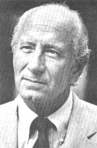
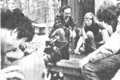
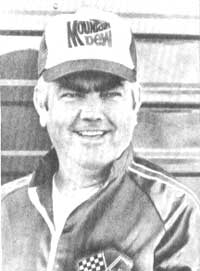

Selected doin's of well-known MOTHER-types from around the world.
CONGRESSMAN JIM WEAVER
Every spring and fall, smokestacks smear the blue skies over Oregon's forests with haze as thousands of tons of logging slash are burned to clear the ground for reforestation. The goal of Congressman Jim Weaver (D-Oregon) is to turn that waste into useful energy . . . and-at the same time-to create jobs and reduce pollution.
Since much of the slash is produced on government-owned forest lands, Mr. Weaver decided that government agencies should take the initiative in reclaiming this resource. So the legislator sponsored the Wood Waste Utilization Act (which is now law) to provide monetary incentives which will-it's hoped-prod such agencies as the Forest Service to sell their waste slash to small independent logging companies. The same agencies are now also responsible for helping to make the slash-recovery operations more profitable by researching new equipment and methods.
PHOTO COURTESY OF JIM WEAVER
Once it's out of the forest, however, the slash still needs to be used wisely. And to aid that effort, Jim Weaver visited a privately owned woodwaste thermal plant in California that produces electricity for a mere 4 cents per kilowatt hour . . . and also provides 500 jobs based on a Forest Service guarantee of a constant 30-year supply of wood-waste. Impressed by what he saw there, the Oregon lawmaker is now arranging funding for the establishment of similar plants in his state, and working out a slash-supply agreement with the Willamette National Forest. In recognition of his efforts, the Wood Energy Institute recently proclaimed Congressman Weaver the "Champion of the West".
Jim has made energy conservation a part of his day-to-day life, too. He's installed a solar water heater and had a solar greenhouse added to his well-insulated home . . . attached his stationary exercise bicycle to a battery storage system . . . and plans to construct a wind generator. His ultimate goal is to have an energy-independent house in an energy-independent state.- Valerie Rapp.
AMORY AND HUNTER LOVINS
Amory and Hunter Lovins-the husband and wife team whose concept of the "soft path" to a renewable technology helped spark today's widespread interest in alternative sources of energy-are the stars of a recently released film called Lovins on the Soft Path (Bullfrog Films, 1982) . . . a 36-minute documentary which attempts to present the basic principles that, if followed, could bring about an economically viable future. The film poses three critical questions: How much energy do we need? What kinds of energy? Where can we get it?
The point of the project is to make viewers aware of the fact that-as Amory puts it-"We're in the position of somebody that can't keep the bathtub full because the water keeps running out. Before we buy a bigger water heater, we ought to get a plug." (For a more detailed look at Amory's theories, see the Plowboy Interview in MOTHER NO. 48.)
The Lovinses-whose busy schedule as energy consultants includes speaking engagements, environmental research projects, and more-agreed to make the film in order to bring their message to a greater audience and, as the president of Bullfrog Films says, to encourage "resourcefulness, thrift, community action, and democratic decision-making". The production is available for sale in 16mm film or video-cassette form . . . and can also be rented-in 16mm only-by schools, churches, public libraries, industries, or civic groups for $75 (for three days) plus shipping and handling. Write to Bullfrog Films, Dept. TMEN, Oley, Pennsylvania 19547.-FM.
JUNIOR JOHNSON
Even those who live "in the fast lane" sometimes need to retreat. And that's probably why Junior Johnson–a race car builder and former NASCAR driver-recently turned a 150-year-old cattle barn into a peaceful Blue Ridge Mountain home for himself and his wife Flossie.
After first carefully identifying each log with a numbered tag, junior removed them from the livestock structure one at a time and then reset them in the cabin in their same positions. The 10"-thick logs are all interlocked by hand-hewn notches and joined with cement mortar. To build the house's foundation and two chimneys, the Johnsons gathered ten tons of blue granite fieldstone from the surrounding hills. Native oak and pine were used to form a front porch, as well as the large overhead beams and pegged floors inside the house. The couple also salvaged planks from the old barn to build a pair of Dutch doors and a massive bed headboard.
The cabin is surrounded by thick woods and a mountain creek. And, in the fall, rows of cabbages and wild mushrooms vie for space in the yard. Only their love of racing lures the Johnsons away from their Appalachian retreat: On Sundays, fans can watch Darrell Waltrip driving one of junior's cars.- Gail Pallotta .
IN BRIEF . . .
TOM BROWN, JR. (author of MOTHER's "At Home in the Wilderness" features) recently published a new edition of his book The Search (Berkley Press, $5.95), describing his year-long retreat into the wilderness .... RENE DUBOS-well-known microbiologist, environmentalist, and subject of the Plowboy Interview in MOTHER NO. 6-died several months ago in New York City .... The author of The Passive Solar Energy Book (Rodale Press, 1979), EDWARD MAZRIA, is one of the architects of a newly built solar-heated library in Mt. Airy, North Carolina .... Companion bills designed to control acid rain have been introduced in the House and the Senate by Congressmen TOBY MOFFETT (D-Connecticut) and JUDD GREGG (R-New Hampshire), and Senator GEORGE J. MITCHELL (D-Maine).FM.
|
 |
 |
 |